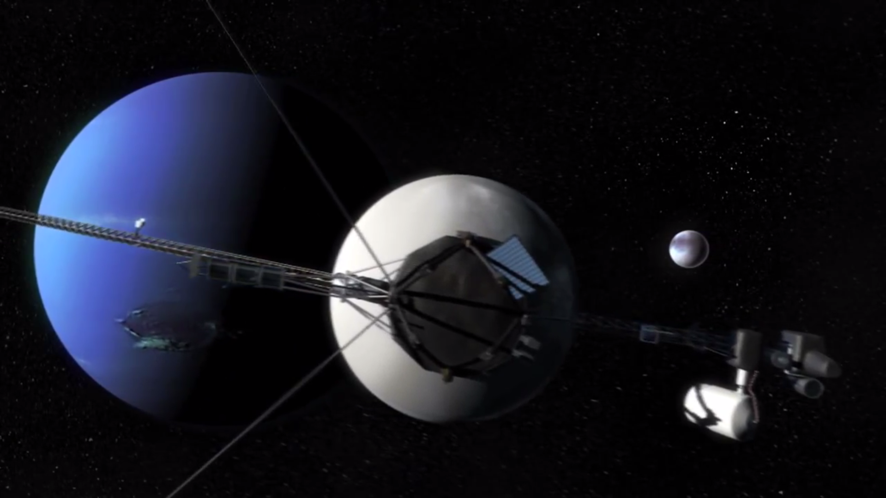

Planet Alignment
Tomorrow will be a great day for scientists. It's the day where Venus and Mercurius will align with Earth, which only happens once every 153 years. Scientists wonder what Mars' influence will be on the solar radiation during the alignment.
Be sure to pack your Neutral Density glasses in order to avoid eye damage. The alignment will be visible for earth around 3pm.
read more ▶